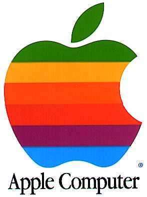

Irish SOPA Law: An Overview

Dear,
[My Name]eircom has not agreed to block any Internet sites from being accessed by
end-users. As part of the settlement of the above proceedings, it was
agreed that eircom would not oppose an application by the Plaintiffs to
seek to have eircom block access to the Pirate Bay website. The Music
Industry will still have to establish, in the normal way that there is
an appropriate basis for the relief which they seek from the Court.
eircom is not supporting or consenting to the application. The
settlement makes no provision for any site other than the Pirate Bay
website.
This post is a continuation on the previous one. IRMA is the Irish Music Rights Organisation which represents the big four record companies and their bottom line: never the artist. They have recently tried to regulate the Internet and have forced the biggest Irish ISP: Eircom; to use the three strikes rule and boot people off the Internet… No Judge, no Jury, no evidence of a crime.. Just an IP address and a sanction which you cannot contest.
I always hoped for better for Ireland; but it seems the thieving hand of “rights” organizations which pretend to represent the artist have struck gold. Being able to cajole and bribe the largest Irish Internet Service Provider (ISP) - Eircom; has worked only too well. Although Eircom has said it will only obey by having a court order - it has agreed never to oppose these - which makes it complicit in the act of censorship. My Letter to Our ISP, Eircom, IRMA, EFF:
I recently read a Slashdot article “EU Commissioner proposes 95 year copyright”. I am a staunch supporter of the European project; or at least the ideals it is based on to create a peaceful, demcratic union of countries with a common background and share similiar goals. Intrigued by the article I read it only to find out that a local man who used to represent my area was responsible. I had to write to him to ask how he lost his mind….
So I read the news Novell and Red Hat are being sued for patent infringement. This is all about multiple workspaces that can hold various graphical user elements, a Xerox Parc patent which dates to the early 1990’s. Xerox Palo Alto Research center invented the graphical user interface in the 1980’s, only to been, licensed and used by Steve Jobs in Mac OS Classic. Now IP Innovation, a submarine patent troll, who make no products and bought the patent want their payday. The logical step is to go after the biggest infringer to set a precedent for your patent, and then make your way to all the smaller companies who infringe. Well logically of course that would be Apple or Microsoft. Apple has already paid them a reported 20 million dollars, and well no-one knows what Microsoft has done, but this fish is smelly. From the Register Article:

Is the much beloved Apple the new Microsoft? First there was IBM, the
big all crushing corporate machine that was humbled by the next big
giant in the form of Microsoft, so it seems Apple’s turn is long
overdue. The next few weeks are crucial to this crossroads in which
Apple finds itself: It owes a HUGE amount to the BSD (an open source
Unix clone) which is the foundation for not just OS X, but the iPhone
and now the iPod Touch. Basically without the kernel that runs these
fantastic devices, Apple would still be up shit creek without a paddle.
Granted the iPod would have been a huge success probably still, but OS
X’s core is the foundation for the real money making Apple will do over
the next few years, a point that is not lost on Mr. Jobs as the company
intelligently markets different segments to different markets of which I
have first hand experience of: Go to the Apple site for education and
they extol the brilliance of a Macbook and make they deal sweeter by
throwing in an iPod Nano. But if you go to a link I was provided in a
college advert; they bring to a page pointing out key areas a mac can
make a difference. I picked Computer Science naturally, and the site
extolled the virtues of Open Source, a Unix base and programming tools
like Xcode.
Unbeknownst to me, with my quick thinking on the positive developments regarding CBS releasing democratic debates under a permissive license in the United States has caused quite a few Irish bloggers to echo my call on RTE’s stance on releasing the Irish Election 2007 debates. If you agree we should be allowed to download, remix and share the debates while giving RTE credit for production, please:
I found this doing a search for Domino Records DRM. I looked up some of my favourite artists to see if they were part of the “MAFIAA” that is the RIAA (Recording Industry Association of America), not surprisingly some were (70% of sold music worldwide is put out by this cartel). I got rather confused when a Franz Ferdinand album appeared on the list, when their debut album did not. Seems the record label did a deal with Sony for distribution. I found a piece of information quite old now (May 2006), but interesting anyway:
Just a quick blurb about some things Microsoft like to say: Don’t believe it, well at least not it all anyway. On the Irish “Get the Facts” page (on Windows Server vs. Linux), they make critical errors of judgement a person reasonably well versed in computing could deconstruct. First of all, Linux isn’t a server, its a kernel, like the Windows kernel. So comparing “Windows Server 2003” to “Linux” is misleading to say the least, and stupid to say the most. You could run any server software on Linux you wished, even Windows Server 2003 if Microsoft ported it! For the sake of argument, I think they are comparing themselves to Apache, which runs 60% of worldwide servers[1].
I am writing this because, I regret to say, the stupidity of humanity. People nowadays define their own law on the Web and the Internet (don’t know the difference, you should), while disregarding real life. Maybe its a lack of understanding about technology or law, I don’t know. One things for sure, common sense can go a long way. Take for example this website on the Commitments, which prohibits linking from unauthorised sites! You see? I just broke the law right there, amazing dontcha think? The person who designed or put the statement up, is a total complete and utter idiot, and I don’t care if thats considered slander! Imagine if every site was to do this? Search engines would be just another litagation filled business, like so many other. With Lawyers reviewing every site to go into the database, Google would have a handful, maybe a 100 sites, instead of the usual billions it indexes.
{kind=link}